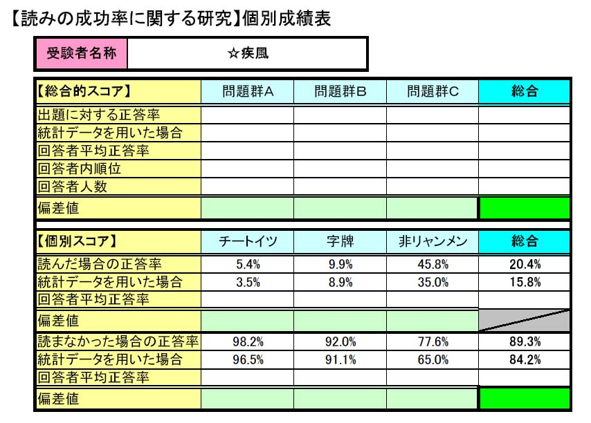
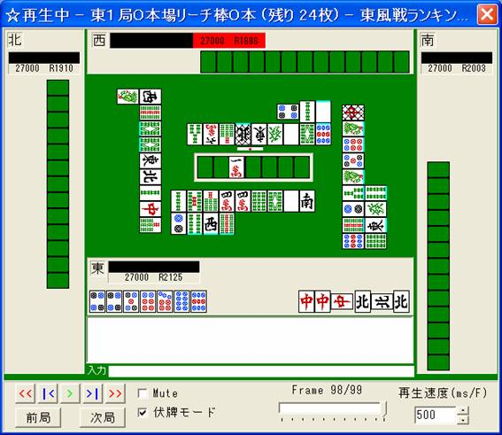
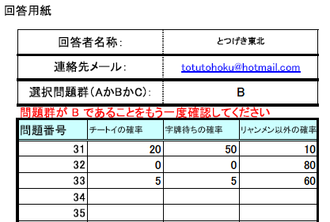

システマティック麻雀工学：
読み能力模試！！
概要：
以前にもリーチの待ち牌読みなどいくつかのテストを行ってきましたが、今回は、チートイツ、字牌待ち、「リャンメンでない待ち」を、果たしてどの程度読むことができるのかのテストです。
07/05/03時点で、のべ約100問題群、のべ3000問以上分の回答が集まっていて、全体として「統計的読み」よりも有意に正しい読みが行われている傾向があります。
どんな「読み」がどの程度使え、どの程度当たるか。麻雀に使える読みとはどういった性質を持つのか。
また、「読み」に強い人の読みにはどのような傾向、相関があるかなど、科学的に解明するための試験です。
読みの鋭かった方には個別にインタビュー等をして、優れた「読み」をする人がどのような判断をしているかを解き明かしたいと思っています。
この結果やインタビュー内容等は、中間報告として「エンターテイメントと認知科学ステーション（電気通信大学）」にて発表することを検討しています。
特に麻雀プロの方々や、「読みにはけっこう自信があるぞ！」という方々の参加を切望しています。
回答者のみなさまには、自分のどんな読みがどの程度当たるのかを、

このような成績表の形にしてお渡ししようと考えています（全問題を解いてくれた方のみ）。
ふるってご参加ください。
※07/05/03注：個別スコアをメールで直に返すことは困難かもしれません。何らか別の形で得点を公表する予定です。ご了承ください。
結果として得られる統計等については、とつげき東北が処理して研究に利用します。
このテストに参加することで、研究に協力していただけると幸いです。
実施期間：
できる限り回答を集めるため、当面の間実施します。
期限の１ヶ月前をめどに、ここで終了予告を行うことを予定しています。
テストの方式：
テストはＡ群、Ｂ群、Ｃ群の3つにわかれていて、いずれも30問出題される。
どれも問題の形式、解答の形式、難易度は同じ程度である。
回答者は、ＡＢＣのうちからどれでも好きなもの（複数回答可）を回答する。
（ちなみに、データは多い方が良いので、ＡＢＣ全部解いてもらうと大変ありがたい）
テストの回答方法：
Ａ、Ｂ、Ｃのいずれも30問だが、１問ごとに、以下の画面のように状況が示されている。
（出題見本）

回答者は、各問題でのトイメンのリーチについて、
「リーチの待ちがチートイツであるかどうか」（またはその確率）
「リーチの待ちが字牌待ちであるかどうか」（またはその確率）
「リーチの待ちがリャンメン以外であるかどうか」（またはその確率）
を読み、回答用紙に記入する。
（回答用紙）

30問解き終わったら終了。
提出先に送付する。
問題、解答用紙、送付先：
難易度等には違いありません。
1問あたりの解答時間目安は15～30分です。
問題群Ａ問題 問題群Ａ解答用紙
問題群Ｂ問題 問題群Ｂ解答用紙
問題群Ｃ問題 問題群Ｃ解答用紙
回答ファイルは「（回答者ニックネーム）（回答問題群名称）.xls」でお願いします。例：「とつげき東北Ｂ.xls」
回答の送付先： totutohoku@hotmail.com
解答用紙に、「読みに対する自信」を記入する欄があるが、これは「自信がある人の成績の平均」と「自信がない人の成績の平均」を比較するなど、主に統計処理を行う際の分類に用いるものであって、回答者の誰に「自信があった」などの情報は公開されない。
個人の成績が個人名とともに公開されることはない。
また、読みの良し悪しについてＨＰ上などでふれることはあるが、その場合に個人名を出すことはない。
ただし、成績優秀な上位10名程度については、個人名と成績を出すことがある。
個別の回答について、「こういう回答があった」などと出す場合でも、個人名と同時に出ることはない。
ただし以上は、集計結果等が必ずしも公開されることを意味してはいないので留意されたい。
※このテストに参加することによって生じた全てのトラブル（回答の未着、回答の不備による採点不可、採点結果の未着、その他）につきまして、とつげき東北および関係者は、誠意をもって対応しますが、最終的には参加者のみなさまが責任を負い、とつげき東北および関係者に対して損害の賠償を求めないことを予め了解の上、ご参加願います。